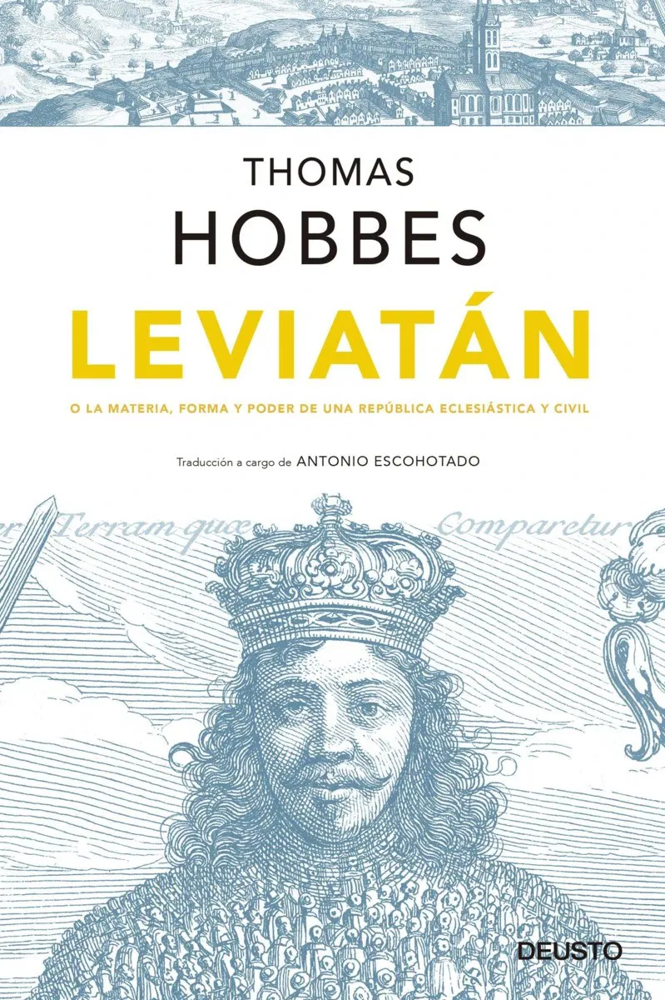
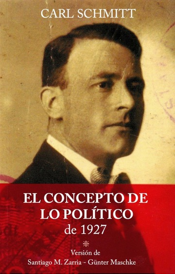

LIBROS FUNDAMENTALES
Aquí encontrarás las obras que cimientan nuestro pensamiento. No hay lugar aquí para teorías débiles o ideas decadentes. Solo conocimiento útil para construir una nación fuerte.
Lee Kuan Yew - El arquitecto de Singapur
Del Tercer Mundo al Primero
La biblia del desarrollo nacional mediante mano dura y disciplina.
DESCARGARFilósofos del Poder y el Orden

Leviatán - Thomas Hobbes
La justificación filosófica del poder estatal absoluto para mantener el orden.
DESCARGAREl Príncipe - Nicolás Maquiavelo
Manual clásico sobre el ejercicio realista del poder político.
DESCARGAR

El Concepto de lo Político - Carl Schmitt
La esencia de la política como distinción entre amigos y enemigos.
DESCARGARAdvertencia
Estos libros son para mentes fuertes. Si buscas pamplinas liberales o teorías progresistas, estás en el lugar equivocado. Aquí solo hay verdad dura como el acero.